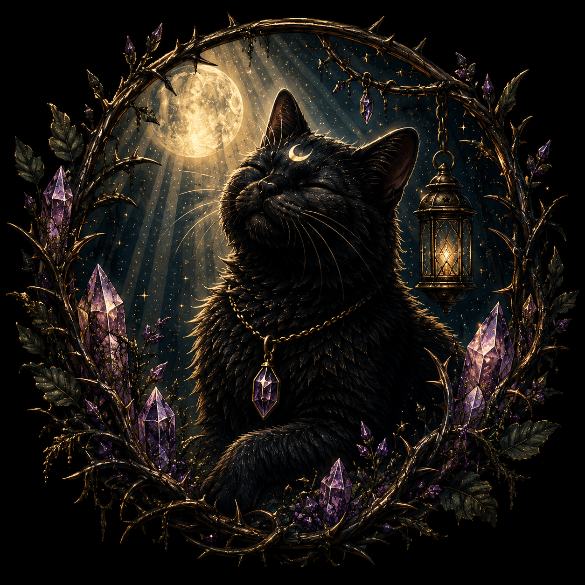

Color-changing keepsake
Briar Bloom
A hidden garden that awakens with warmth. Painted flowers and layered details transform as the thermochromic surface changes temperature.
$89.99

Beyond the thorns
Step softly beyond the thorns, where handmade treasures wait beneath the briars.
Step softly through the thorns Loom BriarA world woven from moonlight, moss, and imagination.
Loom BriarA world woven from moonlight, moss, and imagination.Welcome to
A world woven from moonlight, moss, and imagination.
Hand-painted keepsakes, color-changing artwork, and tiny treasures inspired by the quiet magic of the Briar.
The Briar
Loom Briar is built around original, hand-painted work. Each keepsake begins by hand and develops one brushstroke, shimmer, hidden color, and odd little detail at a time.
The moon, the briars, Pawdrey Hepburn, and the crow guide the world around the artwork. The Briar is the setting. The handmade piece is always the treasure.

The Briar Floor
Hand-painted. One of a kind. Made to hold decks, crystals, jewelry, letters, trinkets, and tiny secrets.
Color-changing keepsake
A hidden garden that awakens with warmth. Painted flowers and layered details transform as the thermochromic surface changes temperature.

Moonlit thermochromic keepsake
When cool, Lunastray darkens. As warmth reaches the surface, its lighter colors and celestial details emerge.

Hand-painted keepsake
Where the Briar meets the sea, a quiet cat watches the horizon. A small keepsake for cards, treasures, and the promise of another dawn.
Thermochromic Magic
These are real views of Lunastray. The darker version is the box while cool. The clearer, lighter version is the box after it warms.
The effect changes gradually rather than flipping all at once. Warm sunlight produces the clearest transformation.



Spirit of the Briar
Every strange little world needs a quiet guardian. Pawdrey Hepburn belongs beneath the moon — eyes closed, basking in the light while the Briar settles around her.
Her clipped left ear is part of her story, and the little inverted moon on her forehead has become part of the Loom Briar mythology.
Beneath the moon, the Briar remembers.
A sound beyond the thorns
An old cuckoo clock with a Loom Briar twist: call it, and the crow slips out from behind the little doors.
Another resident is stirring
A curious little ferret-themed fixture is waiting in the wings — another odd resident of the Briar to build into the world as the collection grows.
The Briar Journal
A home for new pieces, experiments, changing colors, works in progress, clothing, and the small stories that grow around them.
A closer look at thermochromic layers and why every transformation develops a little differently.
Buttons, thread, crystals, mushrooms, pawprints, and the strange little details that become part of the world.
Wearable pieces are making their way through the thorns. This space is ready for the collection when it arrives.